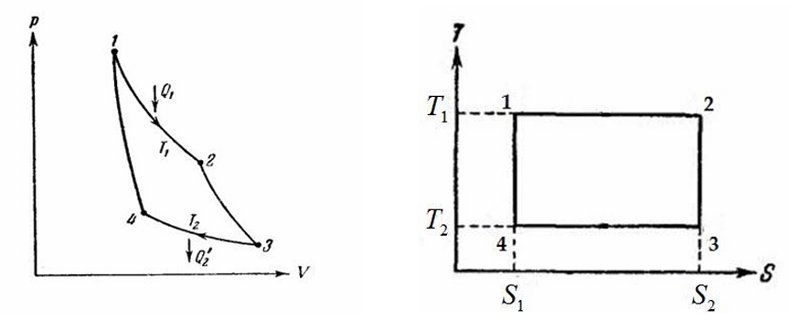

В состоянии равновесия энтропия \( S \) всей системы должна иметь наибольшее возможное значение при заданной энергии системы \( E \). Под энергией системы понимается внутренняя энергия, под внутренней энергией подразумевается разность между полной энергией системы и кинетической энергией её поступательного движения. Так как статистический вес не зависит от того, система в покое или в движении (принцип относительности).
Внутренняя энергия является аддитивной величиной, то есть:
\[ E = E_1 + E_2 \]
С энтропией аналогично:
\[ S = S_1(E_1) + S_2(E_2) = S_1(E_1) + S_2(E - E_2) \]
Условие максимума энтропии:
\[ \frac{dS}{dE_1} = \frac{dS_1}{dE_1} + \frac{dS_2}{dE_2} \cdot \frac{dE_2}{dE_1} = \frac{dS_1}{dE_1} - \frac{dS_2}{dE_2} \] \[ \Rightarrow \frac{dS_1}{dE_1} = \frac{dS_2}{dE_2} \]
Величину, обратную производной энтропии тела по энергии, называют абсолютной температурой тела \( T \):
\[ \frac{dS}{dE} = \frac{1}{T} \]
Отсюда следует, что температура тел в тепловом равновесии равна.
Если у систем разные температуры \( T_1 \) и \( T_2 \), то с течением времени будет устанавливаться температурное равновесие:
\[ \frac{dS}{dt} = \frac{dS_1}{dt} + \frac{dS_2}{dt} = \frac{dS_1}{dE_1} \cdot \frac{dE_1}{dt} + \frac{dS_2}{dE_2} \cdot \frac{dE_2}{dt} > 0 \]
Так как:
\[ \frac{dE_1}{dt} + \frac{dE_2}{dt} = 0 \]
То:
\[ \frac{dS}{dt} = \left(\frac{dS_1}{dE_1} - \frac{dS_2}{dE_2}\right) \cdot \frac{dE_1}{dt} = \left(\frac{1}{T_1} - \frac{1}{T_2}\right) \cdot \frac{dE_1}{dt} > 0 \]
Если \( T_2 > T_1 \), то:
\[ \frac{dE_1}{dt} > 0, \quad \frac{dE_2}{dt} < 0 \]
Энтропия \( S \) зависит не только от энергии, но и от других термодинамических параметров. Например, энергия \( E \) и объем \( V \) являются аддитивными параметрами, поэтому можно рассматривать энтропию как функцию энергии и объема:
Через \( E \) и \( V \) можно выразить другие параметры системы. Уравнением состояния называется функциональная зависимость термодинамических параметров.
Аналогично можно рассматривать энергию как функции энтропии и объема \( E(S, V) \). В этом случае:
Система удовлетворяет уравнению:
Из этого следует:
\( T \) — абсолютная температура:
Давление \( P \) определяется как:
Таким образом, дифференциал энергии принимает вид:
Основное термодинамическое тождество
\[ dE = T dS - P dV \]Адиабатическим называется процесс, при котором система является теплоизолированной, то есть система не обменивается теплом с окружающей средой, а внешние условия меняются достаточно медленно. В таком процессе система проходит через последовательность равновесных состояний, и при обратном изменении внешних условий система пройдет ту же последовательность состояний в обратном порядке.
Так как адиабатический процесс является обратимым, то энтропия остаётся постоянной, иначе это противоречило бы второму началу термодинамики.
Изменение внешних условий можно описывать параметром \( \gamma \), который зависит от времени. Производная энтропии по времени \( \frac{dS}{dt} \) зависит от скорости изменения этого параметра \( \frac{d\gamma}{dt} \). Разложение в ряд по степеням \( \frac{d\gamma}{dt} \):
\[ \frac{dS}{dt} = A + B \cdot \frac{d\gamma}{dt} + C \cdot \left(\frac{d\gamma}{dt}\right)^2 + \dots \]
При \( \frac{d\gamma}{dt} = 0 \):
\[ \frac{dS}{dt} = 0 \quad \Rightarrow \quad A = 0 \]
Второй член меняет знак, а производная энтропии должна оставаться положительной, поэтому:
\[ B = 0 \]
Таким образом:
\[ \frac{dS}{dt} = C \cdot \left(\frac{d\gamma}{dt}\right)^2 + \dots \]
При \( \frac{d\gamma}{dt} \to 0 \):
\[ \frac{dS}{dt} \to 0 \]
Это означает, что при достаточно медленном изменении параметра \( \gamma \) энтропия остаётся постоянной.
Первое начало термодинамики: внутренняя энергия системы может изменяться за счет теплообмена с окружающей средой либо за счет совершаемой над системой работы:
\[ dE = dQ + dA \]
В термодинамике принято считать положительной работу, которая совершается над системой внешними силами.
\[ dA = \mathbf{F} \cdot d\mathbf{r} \]
Сила, действующая на единицу площади поверхности, называется давлением:
\[ \mathbf{F} = P \cdot dS \]
Малое изменение объема выражается через перемещение элемента поверхности:
\[ dV = dS \cdot d\mathbf{r} \]
Тогда работа, совершаемая внешними силами:
\[ dA = -P \cdot dV \]
И изменение внутренней энергии записывается как:
\[ dE = \left(\frac{\partial E}{\partial V}\right)_S \cdot dV \]
Таким образом, с учетом работы:
\[ dE = dA = -P \cdot dV \]
Первое начало термодинамики утверждает, что внутренняя энергия системы может изменяться за счет теплообмена с окружающей средой либо за счет совершаемой над системой работы:
\[ dE = dQ + dA \]
\[ dE = T dS - P dV \]
Из этих формул следует, что:
Термодинамическое определение энтропии:
\[ dQ = T dS \]
Таким образом, энтропия \( S \) определяется как:
\[ S = \int_1^2 \frac{dQ}{T} \]
где интеграл берется по процессу, в течение которого система переходит из состояния 1 в состояние 2, получая (или отдавая) малые количества теплоты \( dQ \) при соответствующих значениях абсолютной температуры \( T \).
Увеличение энтропии в системе может происходить не только вследствие получения системой количества тепла, но и за счет других процессов, например, необратимой химической реакции. В таком случае справедливо основное термодинамическое неравенство:
\[ dS \geq \frac{dQ}{T} \quad \Rightarrow \quad dE \leq T dS - P dV \]
Механическое равновесие предполагает, что силы, с которыми различные части системы действуют друг на друга, скомпенсированы. Нас интересуют силы, действующие на границе между подсистемами. Сила, действующая на единицу площади поверхности, представляет собой давление. Поэтому в состоянии механического равновесия давление равны друг другу. При нарушении механического равновесия объемы подсистем меняются, но общий объем остается постоянным:
\[ V = V_1 + V_2 \]
В состоянии механического равновесия энтропия имеет максимум по отношению к изменению объемов подсистем:
\[ \frac{dS}{dV_1} = \frac{dS_1}{dV_1} + \frac{dS_2}{dV_2} \cdot \frac{dV_2}{dV_1} = \frac{dS_1}{dV_1} - \frac{dS_2}{dV_2} = 0 \]
Получаем, что:
\[ \frac{dS_1}{dV_1} = \frac{dS_2}{dV_2} \]
Тогда имеем:
\[ dS = \frac{1}{T} \cdot dE + \frac{P}{T} \cdot dV \quad \Rightarrow \quad \left( \frac{\partial S}{\partial V} \right)_E = \frac{P}{T} \]
При условии теплового равновесия (равенства температур подсистем) из \( \frac{\partial S_1}{\partial V_1} = \frac{\partial S_2}{\partial V_2} \) получается, что при механическом равновесии имеет место также равенство давлений.
Так как \( P > 0 \), то:
\[ \left( \frac{\partial S}{\partial V} \right)_E < 0 \]
Таким образом, было бы допустимо самопроизвольное сжатие тел, сопровождаемое возрастанием энтропии.
Теплоемкость называется количество тепла, при получении которого температура системы возрастает на 1 градус. Теплоемкость зависит от условий протекания процесс получения тепла.
Соответственно, отличают теплоемкость при постоянном объеме:
\[ C_V = T \left( \frac{\partial S}{\partial T} \right)_V = \left( \frac{\partial E}{\partial T} \right)_V \]
и теплоемкость при постоянном давлении:
\[ C_P = T \left( \frac{\partial S}{\partial T} \right)_P = \left( \frac{\partial E}{\partial T} \right)_P \]
Сжимаемость, или коэффициент объемного сжатия, характеризует свойства вещества изменять свой объем при изменении внешнего давления.
Отличают изотермическую сжимаемость:
\[ \beta_T = -\frac{1}{V} \left( \frac{\partial V}{\partial P} \right)_T \]
и адиабатическую сжимаемость:
\[ \beta_S = -\frac{1}{V} \left( \frac{\partial V}{\partial P} \right)_S \]
Коэффициент теплового расширения характеризует относительную величину изменения объема тела с увеличением температуры на 1 градус при постоянном давлении:
\[ \alpha = \frac{1}{V} \left( \frac{\partial V}{\partial T} \right)_P \]
Свойства термодинамических функций:
В изохорном-изобарическом процессе:
\[ dQ = dE = d(E + PV) = dW \]
Энтальпия определяется как:
\[ W = E + PV \]
Дифференциал энтальпии:
\[ dW = dE + PdV + VdP = TdS + VdP \]
Энтальпия \(W = W(S, P)\)
Частные производные:
\[ \left( \frac{\partial W}{\partial S} \right)_P = T, \quad \left( \frac{\partial W}{\partial P} \right)_S = V \]
Энтальпия достигает максимума в состоянии равновесия.
В изотермическом процессе:
\[ dA = dE - dQ = dE - TdS = d(E - TS) = dF \]
Свободная энергия:
\[ F = E - TS \]
Дифференциал свободной энергии:
\[ dF = -SdT - PdV \]
Свободная энергия \(F = F(T, V)\)
Частные производные:
\[ \left( \frac{\partial F}{\partial T} \right)_V = -S, \quad \left( \frac{\partial F}{\partial V} \right)_T = -P \]
Свободная энергия достигает минимума в состоянии равновесия.
Определение:
\[ \Phi = F + PV = E - TS + PV \]
Дифференциал термодинамического потенциала:
\[ d\Phi = -SdT + VdP \]
Термодинамический потенциал \(\Phi = \Phi(T, P)\)
Частные производные:
\[ \left( \frac{\partial \Phi}{\partial T} \right)_P = -S, \quad \left( \frac{\partial \Phi}{\partial P} \right)_T = V \]
Термодинамический потенциал достигает минимума в состоянии равновесия.
Термодинамически сопряженные параметры — это такие параметры, где один выражается через производные термодинамических функций по другому. Например, \( S \) и \( T \), \( P \) и \( V \).
В равновесном состоянии системы обычно используются пары несопряженных параметров.
Основные зависимости между функциями:
\[ W = E + PV, \quad F = E - TS, \quad \Phi = F + PV = W - TS = E - TS + PV \]
\[ E = F - T\left(\frac{\partial F}{\partial T}\right)_V, \quad W = \Phi - T\left(\frac{\partial \Phi}{\partial T}\right)_P \]
При учете тензора напряжений \( \sigma_{ij} \) и тензора деформации \( \varepsilon_{ij} \), работа выражается как:
\[ dA = \sum_{i,j} \sigma_{ij} \cdot d\varepsilon_{ij} \]
Основное термодинамическое тождество принимает вид:
\[ dE = TdS + \sum_{i,j} \sigma_{ij} \cdot d\varepsilon_{ij} \]
Тогда:
\[ \left(\frac{\partial E}{\partial S}\right)_{\varepsilon_{ij}} = T, \quad \left(\frac{\partial E}{\partial \varepsilon_{ij}}\right)_S = \sigma_{ij} \]
Если учитывать другие взаимодействия(например магнитное или электрическое), то к дифференциалу энергии добавляется добавка:
\[ dE = TdS - PdV + \sum_i \Lambda_i \cdot d\lambda_i \]
Где \( \lambda_i \) — параметры системы, \( \Lambda_i \) — сопряженные параметры к \( \lambda_i \).
Основное тождество принимает вид:
\[ dW = TdS + VdP + \sum_i \Lambda_i \cdot d\lambda_i \]
Если значения параметров \( \lambda_i \) изменяются на небольшую величину, это вызывает соответствующие изменения термодинамических функций. При постоянстве остальных параметров изменения функций равны друг другу:
\[ \left(dE\right)_{S,V} = \left(dF\right)_{T,V} = \left(d\Phi\right)_{T,P} = \left(dW\right)_{S,P} = \sum_i \Lambda_i \cdot d\lambda_i \]
Метод Якобианов применяется для перехода от одних термодинамических параметров к другим, используя соотношения между их производными.
Соотношение для изобарной теплоемкости:
\[ \left( \frac{\partial C_V}{\partial V} \right)_T = \left( \frac{\partial}{\partial V} \left[ T \left( \frac{\partial S}{\partial T} \right)_V \right] \right)_T = T \frac{\partial^2 S}{\partial V \partial T} = - T \frac{\partial^3 F}{\partial V \partial T^2} \left( \frac{\partial F}{\partial V} \right)_T = T \left( \frac{\partial^2 P}{\partial T^2} \right) \]
Соотношение для изобарной теплоемкости:
\[ \left( \frac{\partial C_P}{\partial P} \right)_T = \left( \frac{\partial}{\partial P} \left[ T \left( \frac{\partial S}{\partial T} \right)_P \right] \right)_T = T \frac{\partial^2 S}{\partial P \partial T} = - T \frac{\partial^3 \Phi}{\partial P \partial T^2} = -T \frac{\partial^2}{\partial T^2} \left( \frac{\partial \Phi}{\partial P} \right)_T = -T \left( \frac{\partial^2 V}{\partial T^2} \right)_P \]
Метод преобразования производных термодинамических величин получил название метод якобианов. Он применяется при необходимости перехода от одних термодинамических параметров к другим.
Якобиан для двух переменных \( u \) и \( v \) относительно \( x \) и \( y \) выражается через детерминант:
\[ \frac{\partial(u, v)}{\partial(x, y)} = \left| \begin{matrix} \frac{\partial u}{\partial x} & \frac{\partial v}{\partial y} \\ \frac{\partial v}{\partial x} & \frac{\partial v}{\partial y} \end{matrix} \right| \]
Для того чтобы система находилась в устойчивом состоянии, должны выполняться следующие условия:
Если хотя бы одно из этих условий нарушается, система переходит в состояние неустойчивости.
На основе этих неравенств иллюстрируется принцип Ле Шателье, согласно которому внешнее воздействие, выводящее систему из равновесия, стимулирует в ней процессы, стремящиеся ослабить результаты этого воздействия.
Рассмотрим процесс, в котором вещество заключено в теплопроводящем цилиндре. Поршень уравновешен давлением \( P \). Веществу сообщается теплота \( \Delta Q \), и равновесие нарушается. В результате температура \( T \) растет, что вызывает увеличение давления \( P \), смещая объем:
\[ \left( \frac{\partial T}{\partial S} \right)_V > \left( \frac{\partial T}{\partial S} \right)_P \quad \Rightarrow \quad \Delta T = \left( \frac{\partial T}{\partial S} \right) \cdot \Delta S, \quad (\Delta T)_V > (\Delta T)_P \]
Полученное неравенство показывает, что изменение температуры будет больше в случае фиксированного объема (положение поршня неизменно), чем в случае, когда изменение объема возможно. При подвижном поршне система будет реагировать таким образом, чтобы уменьшить эффект внешнего воздействия.
Параметры:
Восстановление равновесия сопровождается ослаблением результатов внешнего воздействия.
Уменьшение объема \( V \) может выступать в роли параметра, характеризующего равновесие системы со средой. Если \( T = \text{const} \), то \( P \) возрастет на \( (\Delta P)_T \). Поддержание \( T = \text{const} \) исключает реакцию системы на внешнее воздействие. Если система теплоизолирована, уменьшение \( V \) приводит также к увеличению \( T \), при этом сохраняется постоянная энтропия \( S \):
\[ -\left( \frac{\partial P}{\partial V} \right)_S > -\left( \frac{\partial P}{\partial V} \right)_T \quad \Rightarrow \quad (\Delta P)_T > (\Delta P)_S \]
Это показывает, что уменьшение \( V \) стимулирует процессы, которые стремятся уменьшить \( P \), чтобы ослабить внешнее воздействие.
Третье начало термодинамики утверждает, что энтропия системы стремится к нулю при стремлении температуры к абсолютному нулю:
\[ S = k \cdot \ln(\Gamma) \to 0, \quad \text{при } T \to 0 \]
Где:
Энергия \( E \) является монотонно возрастающей функцией температуры при постоянном объеме:
\[ C_V = T \left( \frac{\partial S}{\partial T} \right)_V = \left( \frac{\partial E}{\partial T} \right)_V \]
\[ C_V \to 0, \quad C_P \to 0 \]
Рассмотрим теплоемкость \( C \):
\[ C = T \frac{\partial S}{\partial T} = T \frac{\partial S}{\partial t} \cdot \frac{\partial t}{\partial T} = \frac{\partial S}{\partial \ln(T)}, \quad t = \ln(T) \]
Поскольку \( S \to 0 \) и \( \ln(T) \to -\infty \), получаем противоречие.
Коэффициент теплового расширения \( \alpha \) также стремится к нулю:
\[ \alpha = \frac{1}{V} \left( \frac{\partial V}{\partial T} \right)_P = -\frac{1}{V} \left( \frac{\partial S}{\partial P} \right)_T \]
Поскольку \( S \to 0 \), получаем противоречие.
Поведение производной давления по температуре при фиксированном объеме:
\[ \left( \frac{\partial P}{\partial T} \right)_V = \left( \frac{\partial S}{\partial V} \right)_T \to 0 \]
Аналогично предыдущему случаю, возникает противоречие.
Теорема Нернста, установленная экспериментально, демонстрирует, что при \( T \to 0 \) термодинамические величины, такие как теплоемкость, коэффициент теплового расширения и энтропия, асимптотически стремятся к нулю. Это подчеркивает фундаментальное ограничение на достижение абсолютного нуля температуры.
Если рассмотреть тело как произвольно градуированный термометр со шкалой температур \( \tau \), то можно установить зависимость \( T(\tau) \):
\[ \left( \frac{\partial Q}{\partial P} \right)_T = T \cdot \left( \frac{\partial S}{\partial P} \right)_T = -T \cdot \left( \frac{\partial V}{\partial T} \right)_P \]
\[ \left( \frac{\partial Q}{\partial P} \right)_T = \left( \frac{\partial Q}{\partial P} \right)_\tau \]
\[ \left( \frac{\partial V}{\partial T} \right)_P = \left( \frac{\partial V}{\partial \tau} \right)_P \cdot \frac{d\tau}{dT} \]
\[ \left( \frac{\partial Q}{\partial P} \right)_\tau = T \cdot \left( \frac{\partial V}{\partial \tau} \right)_P \cdot \frac{d\tau}{dT} \]
\[ \frac{d(\ln(T))}{d\tau} = \frac{1}{T} \cdot \frac{dT}{d\tau} = - \frac{\left( \frac{\partial V}{\partial \tau} \right)_P}{\left( \frac{\partial Q}{\partial P} \right)_\tau} \]
Из данного выражения следует:
Таким образом определяется искомая зависимость \( T = T(\tau) \).
Условия:
Уравнение энергий:
\[ E_2 - E_1 = P_1V_1 - P_2V_2 \]
Также:
\[ E_1 + P_1V_1 = E_2 + P_2V_2 \]
При \( W_1 = W_2 \), \( W = const \), процесс остается необратимым.
\[ \left( \frac{\partial T}{\partial P} \right)_W = \frac{\partial(T, W)}{\partial(P, W)} = \frac{\partial(T, W)}{\partial(P, T)} \cdot \frac{\partial(P, T)}{\partial(P, W)} \]
Преобразовав:
\[ \left( \frac{\partial T}{\partial P} \right)_W = -\frac{\left( \frac{\partial W}{\partial P} \right)_T}{\left( \frac{\partial W}{\partial T} \right)_P} \]
С учетом:
\[ C_P = \left( \frac{\partial W}{\partial T} \right)_P, \quad \left( \frac{\partial W}{\partial P} \right)_T = V - T \cdot \left( \frac{\partial V}{\partial T} \right)_P \]
Получим:
\[ \left( \frac{\partial T}{\partial P} \right)_W = \frac{1}{C_P} \cdot \left( T \cdot \left( \frac{\partial V}{\partial T} \right)_P - V \right) \]
Используем уравнение:
\[ dW = T \cdot dS + V \cdot dP \]
Следовательно:
\[ dS = \frac{dW}{T} - \frac{V}{T} \cdot dP \]
При \( W = const \):
\[ \left( \frac{\partial S}{\partial P} \right)_W = -\frac{V}{T} \]
Переход газа к меньшему давлению в ходе необратимого процесса Джоуля — Томсона сопровождается увеличением энтропии.
Газ, первоначально находящийся в одном из двух сообщающихся сосудов, расширяется во второй:
\[ \Delta T = \left( \frac{\partial T}{\partial V} \right)_E = \frac{1}{C_V} \cdot \left( P - T \cdot \left( \frac{\partial P}{\partial T} \right)_V \right) \]
\[ \left( \frac{\partial S}{\partial V} \right)_E = \frac{P}{T} \]
Энтропия возросла при расширении.
Пусть \( V = \text{const} \), \( Q = 0 \)
Считаем \( A_{\text{над}} > 0 \), \( A_{\text{сист}} < 0 \);
|\( A_{\text{max}} \)| = \( E_1(S_1, V_1) - E(S, V_1) \)
\( A_{\text{max}} \) при \( S = \text{const} \).

Термостат — тело, обладающее настолько большим \( V \) и \( E \), что процессы не приводят к значительным изменениям \( P \).
Окружающая среда характеризуется \( T_0 \), \( P_0 \), телом имеет \( T \) и \( P \), где \( T \neq T_0 \), \( P \neq P_0 \). Тело может совершать работу над третьим телом.
Изменение внутренней энергии:
При этом:
С учетом второго закона термодинамики:
Работа:
Максимальная работа (\( A_{\text{max}} \)) может быть получена только в обратимом процессе, при условии:
Частный случай:
\[ T = \text{const}, \, P = \text{const} \quad \Rightarrow \quad A_{\text{min}} = (T - T_0) \Delta S - (P - P_0) \Delta V \]
\[ T = T_0, \, P = \text{const} \quad \Rightarrow \quad A_{\text{min}} = \Delta (E - TS) = \Delta F \]
\[ T = T_0, \, P = P_0 \quad \Rightarrow \quad A_{\text{min}} = \Delta (E - TS + PV) = \Delta \Phi \]
Считаем, что система состоит из одинаковых частиц. Количество частиц аддитивным величинам (энергия, энтропия, энтальпия, термодинамический потенциал, свободная энергия).
Если взять замену:
Тогда:
Считаем, что \(N\) является переменной величиной на уровне макропараметра.
Тогда дифференциал энергии примет вид:
Частные производные:
Для остальных термодинамических потенциалов:
Химический потенциал выражается как:
Химический смысл химического потенциала заключается в том, что это энергия, которая может быть поглощена или высвобождена вследствие изменения количества частиц данного вещества.
При установившемся равновесии между подсистемами, связанным с обменом частицами, химический потенциал всех частей системы одинаков.
Считаем, что число частиц в системе не меняется, а меняется лишь в подсистемах:
Дифференциал энтропии с учетом обмена частицами:
Отсюда следует:
Если выразить dS из уравнения для dE, то:
Тогда получаем:
Отсюда следует равенство химических потенциалов в подсистемах в равновесии:
Ф — термодинамический потенциал тела, представленный как его термодинамический потенциал Ф, отнесенный к одной частице:
Химический потенциал тела представляет собой его термодинамический потенциал Ф, отнесенный к одной частице. Химический потенциал \(\mu\) является функцией только температуры и давления, он не зависит от числа частиц. Тогда:
Термодинамический потенциал \(Ω\) определяется как:
Дифференциал термодинамического потенциала \(Ω\):
Частные производные термодинамического потенциала \(Ω\):
Из аддитивности энергии, энтальпии, свободной энергии, термодинамического потенциала \(Ω\), а также энтропии, объема и числа частиц следует аддитивность термодинамического потенциала \(Ω\).
Основное термодинамическое неравенство:
При \(T = const\), \(P = const\), \(μ = const\):
Дифференциал термодинамического потенциала \(Ω\) при этом:
Термодинамический потенциал \(Ω\) имеет тенденцию уменьшаться, достигая минимума в равновесии.